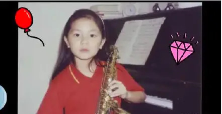

 G.E.M. was born in the year of 1991, in Shanghai China, and named Tang Sze-wing (邓诗颖). At the age of four, she moved to Hongkong. With a music background that runs in the family, she became interested in music at a very young age. She was skilled in piano and could write songs at the age of 5. In 2006, when she was 15, she won the championship in a singing contest called Spice It Up. This helped her catch the attention of Chang Tan (张丹), who then recruited her for Hummingbird Music, a recording company. Therefore, she became a professional singer at 16.